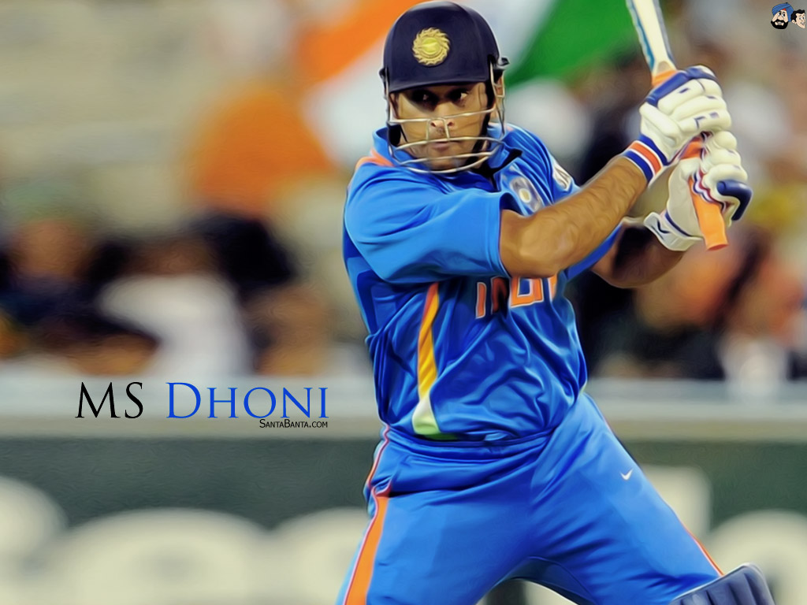

The Captain Cool- M.S. DHONI
Mahendra Singh Dhoni, is an Indian former international cricketer who captained the Indian national team in limited-overs formats from 2007 to 2016 and in Test cricket from 2008 to 2014. Under his captaincy, India won the 2007 ICC World Twenty20, the 2010 and 2016 Asia Cups, the 2011 ICC Cricket World Cup and the 2013 ICC Champions Trophy. A right-handed middle-order batsman and wicket-keeper, Dhoni is one of the highest run scorers in One Day Internationals with more than 10,000 runs scored and is considered an effective "finisher" in limited-overs formats. He is also regarded by some as one of the best wicket-keepers and captains in modern limited-overs international cricket. For more Info.
Dhoni was born in Ranchi, Bihar (now in Jharkhand), and he identifies as a Hindu Rajput. His paternal village Lwali is in the Lamgara block of the Almora District of Uttarakhand. Dhoni's parents moved from Uttarakhand to Ranchi, where his father Pan Singh worked in junior management positions in MECON. Dhoni has a sister Jayanti Gupta and a brother Narendra Singh Dhoni. Dhoni is a fan of Adam Gilchrist, and his childhood idols were cricket teammate Sachin Tendulkar, Bollywood actor Amitabh Bachchan and singer Lata Mangeshkar.
Dhoni studied at DAV Jawahar Vidya Mandir, Shyamali, Ranchi, Jharkhand where he initially excelled in badminton and football and was selected at district and club level in these sports. Dhoni was a goalkeeper for his football team and was sent to play cricket for a local cricket club by his football coach. Though he had not played cricket, Dhoni impressed with his wicket-keeping skills and became the regular wicketkeeper at the Commando cricket club (1995–1998). Based on his performance at club cricket, he was picked for the 1997/98 season Vinoo Mankad Trophy Under-16 Championship and he performed well. Dhoni focused on cricket after his 10th standard. Dhoni was a Travelling Ticket Examiner (TTE) at Kharagpur railway station from 2001 to 2003, under South Eastern Railway in Midnapore (W), a district in West Bengal. His colleagues remember him as a very honest, straightforward employee of the Indian Railways. But he also had a mischievous side to his personality. Once, while staying at the railway quarters, Dhoni and a couple of his friends covered themselves in white bedsheets and walked around in the complex late in the night. The night guards were fooled into believing that there were ghosts moving around in the complex. The story made big news on the next day.
Jawahar Vidya Mandir Shyamali,Ranchi
Dhoni studied at DAV Jawahar Vidya Mandir, Shyamali, Ranchi, Jharkhand.
VARA
Dhoni's Farmhouse
Currently, he is living here with his family.
Motorcycle Lover
Dhoni's Collection
He have lots of bikes and cars in his farmhouse.
Sakshi Singh Dhoni
Dhoni married Sakshi Singh Rawat, his schoolmate in DAV Jawahar Vidya Mandir, Shyamali.